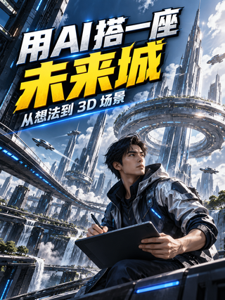
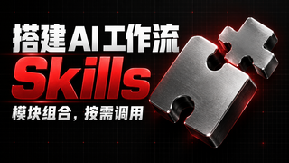
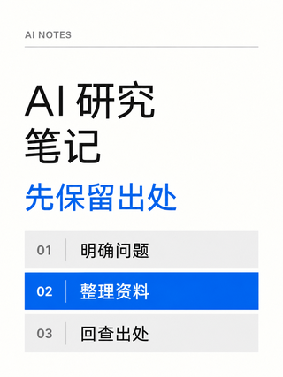
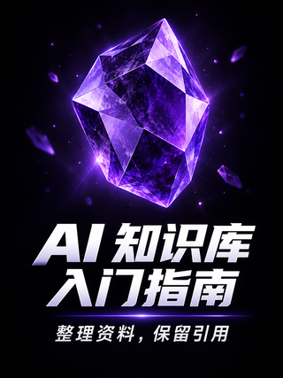
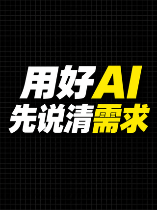

S01 · 视觉风格蓝黑界面实战上部白青大标题，下部发光设备与一个清楚的界面成果适合：AI 编程教程、软件上手、网页或游戏制作这张示例：横版 · 原创人物。此风格四种组合均可用。查看原图 · 查看完整提示词选 S01 蓝黑界面实战
S02 · 视觉风格斜切动势海报倾斜重字、冷色场景与大动作主体形成一条斜向视线适合：AI 游戏制作、3D 创作成果、动作或机器人主题这张示例：竖版 · 原创人物。此风格四种组合均可用。查看原图 · 查看完整提示词选 S02 斜切动势海报
S03 · 视觉风格黑红金属拼块黑底白红重字，银色拼块与红色边光表达模块组合适合：Skill 功能解读、插件组合、模块化工作流这张示例：横版 · 无人物。此风格四种组合均可用。查看原图 · 查看完整提示词选 S03 黑红金属拼块
S04 · 视觉风格瑞士白底文档白底留白、细线与编号表，蓝色重点行组织一条观点适合：AI 研究观点、Skill 方法说明、规则或流程变化这张示例：竖版 · 无人物。此风格四种组合均可用。查看原图 · 查看完整提示词选 S04 瑞士白底文档
S05 · 视觉风格紫晶软件入门上部一枚紫色晶体标识，下部白色斜体入门大字适合：软件入门、笔记工具教学、一个产品的核心功能这张示例：竖版 · 无人物。此风格四种组合均可用。查看原图 · 查看完整提示词选 S05 紫晶软件入门
S06 · 视觉风格蓝紫产品面板亮蓝紫底、大产品名与一个主功能窗口，短标签讲清用途适合：软件功能介绍、开源工具展示、有证据的产品比较这张示例：横版 · 无人物。此风格四种组合均可用。查看原图 · 查看完整提示词选 S06 蓝紫产品面板
S07 · 视觉风格黑网格黄白巨字弱网格黑底，居中黄白粗斜字，以文字承担全部焦点适合：AI 观点、时间变化、一句争议或对照结论这张示例：竖版 · 无人物。此风格四种组合均可用。查看原图 · 查看完整提示词选 S07 黑网格黄白巨字
S08 · 视觉风格黑金成果聚焦深黑底、一个金色大物件，短白字围绕成果建立焦点适合：AI 生成成果展示、单一概念成果、内容明确的赛事相关制作这张示例：横版 · 无人物。此风格四种组合均可用。查看原图 · 查看完整提示词选 S08 黑金成果聚焦